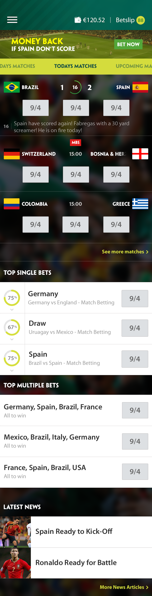
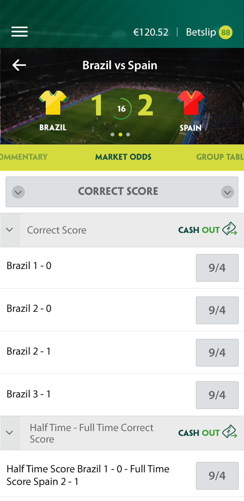
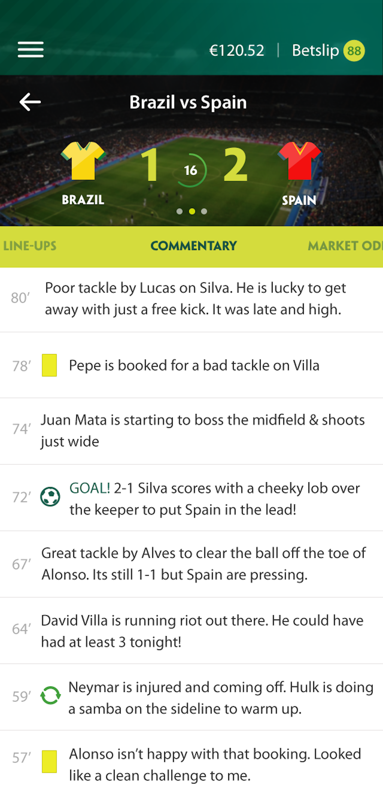
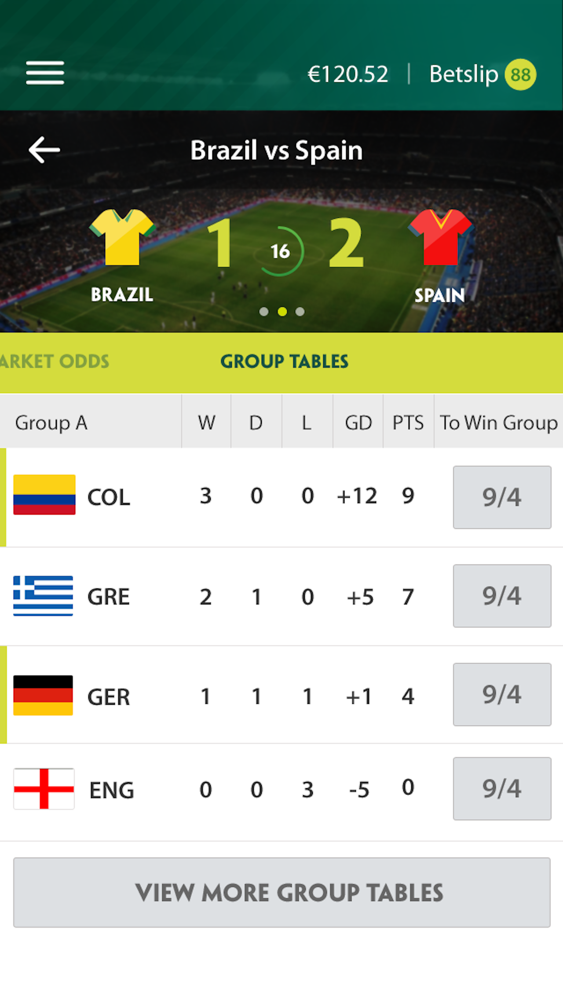
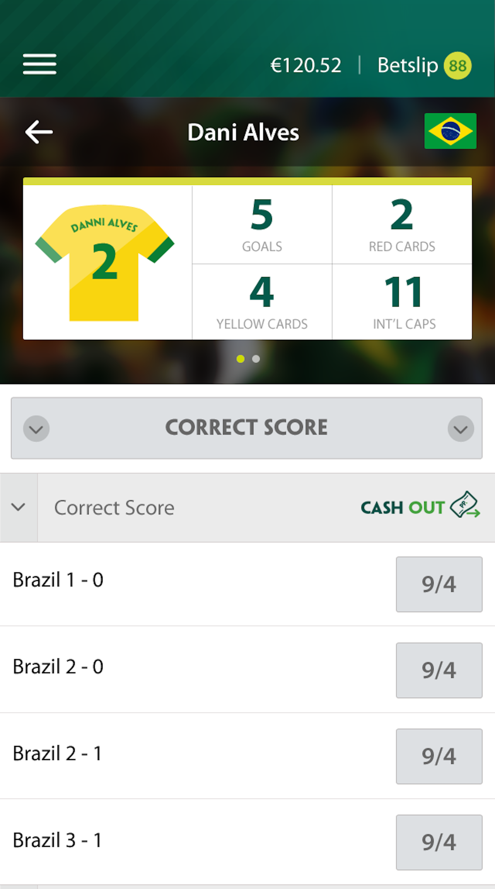
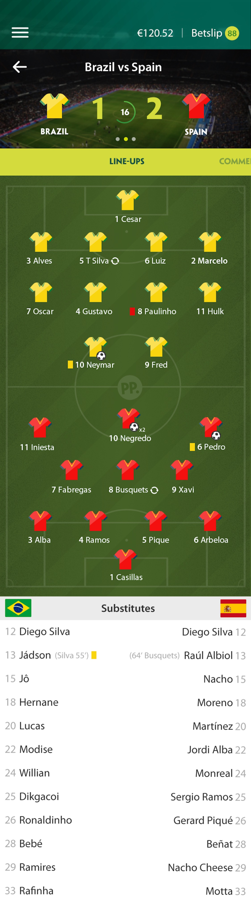
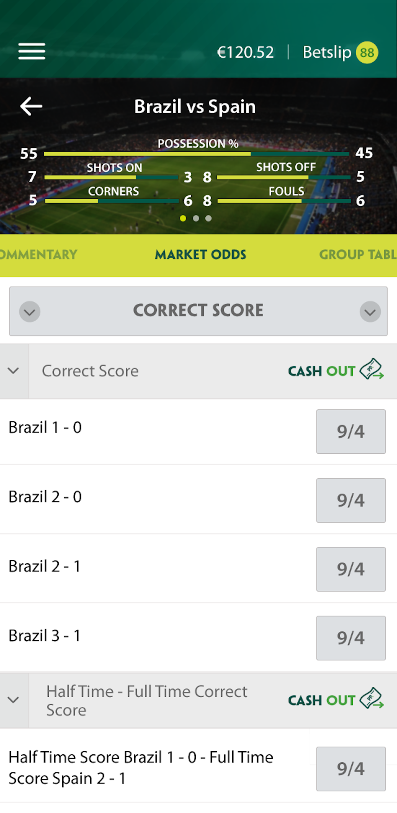
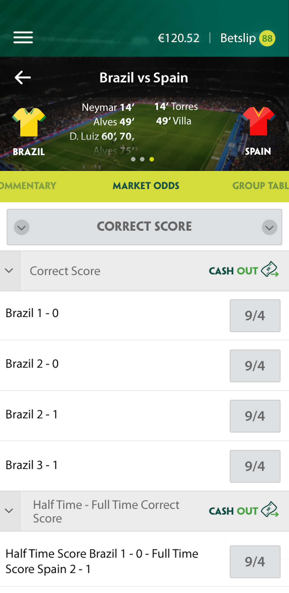
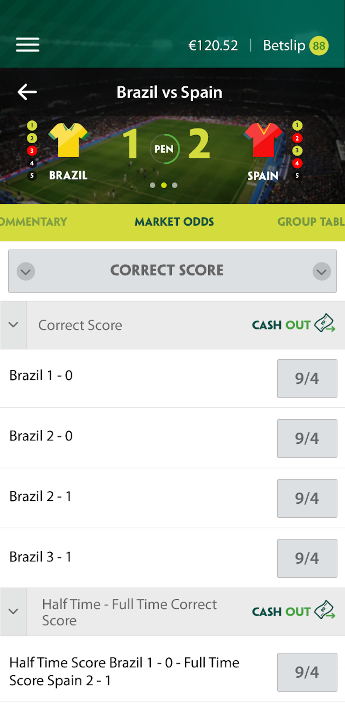

A World Cup companion app built to feel like an event, not a betting slip
Role: Sole designer. I designed the end-to-end experience and produced all of the visual assets, including a scalable football template covering every team in the tournament. I worked with an external agency to build and ship the app in time for the 2014 World Cup.



For the 2014 World Cup, Paddy Power wanted a standalone iOS app that brought the whole tournament into one place: live scores, match stats, commentary, line-ups, group tables, and betting markets. The brief was about capturing tournament energy without losing the Paddy Power identity. Every screen had to feel unmistakably ours while standing on its own as something built specifically for the World Cup, not a betting app with a football skin.
Where the core Paddy Power product was pragmatic, this was a chance to be more expressive. Full-bleed stadium photography behind every match instead of stock crests. Illustrated kits instead of plain badges. Small, playful details throughout. It stayed high-energy without tipping into gimmick.
I designed the full end-to-end experience and produced all of the visual assets. That included a scalable football template covering every team in the tournament, built so kits, crests, and colours could be swapped across fixtures without redesigning each screen from scratch. I also designed every match state, pre-match, kick-off, half-time, full-time, and post-match, along with an individual player profile view with stats, so the app held together as a single system rather than a set of one-off screens. The visual language sat alongside the core Paddy Power product but carried its own identity. I worked with an external agency who built the app; I owned the design through to launch.
A handful of decisions did most of the work:
Each match had a single home with a persistent header and a set of tabs. The header carried the score and swiped between live slides: key stats, scorers, and, when it came to it, penalties. Below, tabs moved between the parts of a match people actually cared about: market odds with Cash Out, live commentary, line-ups, and group tables. Tapping a player from the line-up opened an individual profile with their stats for the tournament.
That same home had to work across every state of a match, not just the 90 minutes in play: pre-match build-up, kick-off, half-time, full-time, and post-match, each with its own relevant content and betting markets.



Rather than splitting stats, scorers, and penalties across separate screens, they lived in the header itself, one swipe apart. It kept the most-checked information a single gesture away, no matter which tab you were on.



The real challenge wasn't any single screen, it was scale. Without licensed crests to fall back on, every team's identity had to be built from scratch, and with 32 teams and a fixture list that changed daily, each one had to hold up for any match-up: an opening group game needed to look just as considered as the final.
I built the illustration system as a template: consistent kit proportions, a fixed colour structure per team, repeatable badge placement. New teams could be added without redesigning from scratch, and the whole set held together as one coherent system rather than 32 one-off illustrations.
Looking back, this is some of the most fun I've had with visual design. A fixed tournament, 32 teams, a hard deadline, and a brand to both honour and step outside of: those constraints forced real decisions instead of open-ended exploration. The template system is what made the bold choices possible. Without it, moving fast across 32 teams would have meant getting sloppy by the quarter-finals.
It's over a decade old now. As my career moved toward larger, more established products, design system consistency became the priority and end-to-end creative swings like this got rarer. But the instinct behind it, building a system that makes room for boldness rather than constraining it, is the same one I bring to every project I work on today.
[Optional: add download, engagement, or performance numbers here if you have them, otherwise cut this line and end on the reflection above.]
Enter password to view this case study